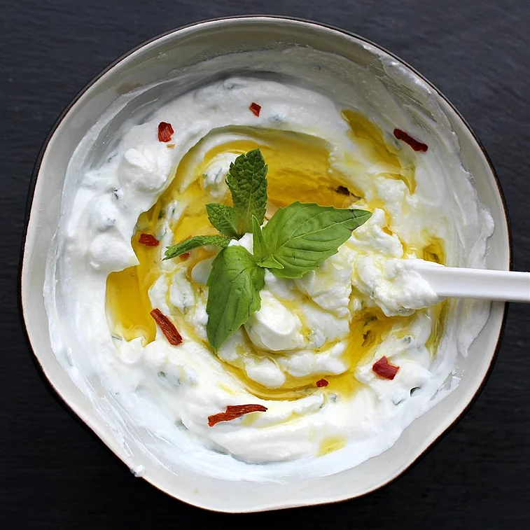

Labneh Recipe

Best Labneh In The World
Best healthy good Labneh. Good for family table dinner. Food that satisfies the soul
Ingredients
- 1 (16 ounce) package lasagna noodles
- 1 pound lean ground beef
- salt and pepper to taste
- 1 (16 ounce) jar spaghetti sauce
- 1 clove garlic, minced
- ½ pound shredded mozzarella cheese
- ½ pound shredded Cheddar cheese
- 1 pint ricotta cheese